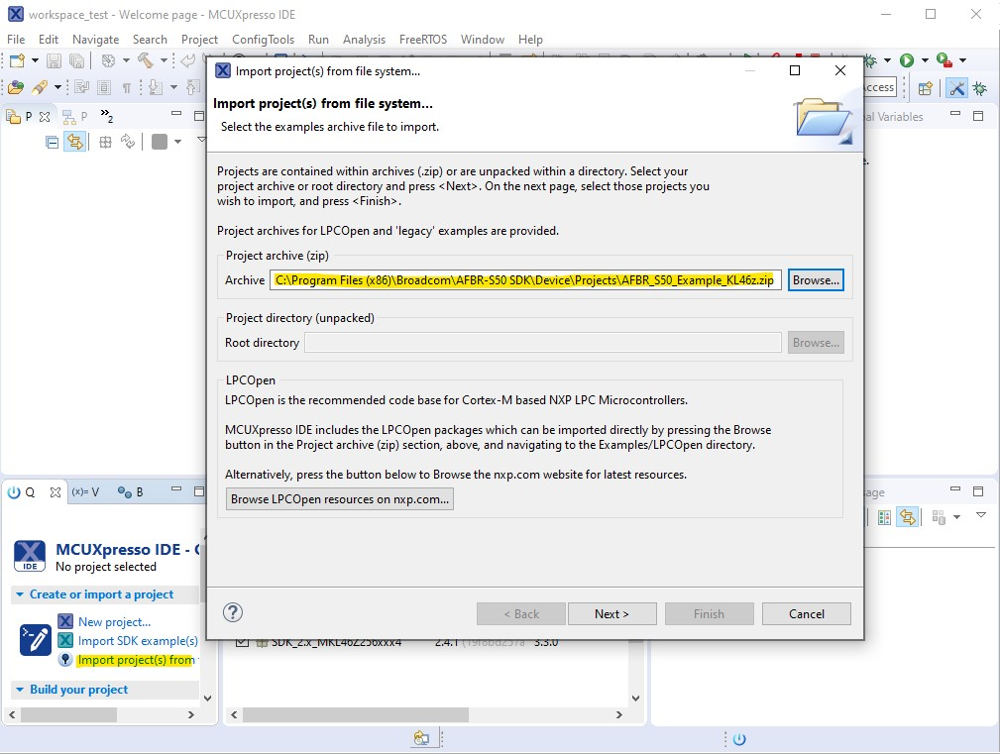

The following section gives an brief overview on of the AFBR-S50 Core Library and API and shows how to get started using the evaluation platform and example files. If a port to another microcontroller platform is required, refer to the Porting Guide.
AFBR-S50 API
- Note
- All AFBR-S50 API related functions, definitions and constants have a prefix
Argus which is essentially an alias or working title for the AFBR-S50 Time-of-Flight Sensor device.
The AFBR-S50 Core Library is provided as a static ANSI-C library file ("lib*.a") and the corresponding API is provided as ANSI-C header files ("*.h"). After setting up the linker to link the library, it is sufficient to include the main header in the "/include" folder, "argus.h":
The API utilizes an abstract handler object that contains all internal states for a single time-of-flight sensor device. In this way, it is possible to use the same API with more than a single device. Note, however, that this feature is not fully implemented in the current version and is planned for a future release! After including the header file, the handler object must be created by calling the Argus_CreateHandle function to obtain a pointer to the newly allocated object. This is done via the standard library function:
void * malloc(size_t size)
If it is required to use a different function, create and overwrite the weakly linked method and implement your own memory allocation algorithm:
void * Argus_Malloc(size_t size) { /* ... */ }
After creation of the handler object, the AFBR-S50 module must be initialized with the corresponding handler object:
status_t status = Argus_Init(hnd, SPI_SLAVE);
Note that all peripheral modules must be ready to be used before executing any API function. So make sure to initialize the board and its peripherals before initializing the API via Argus_Init.
After calling Argus_Init, the device is ready to run and has been setup with default configuration and calibration data. Use the provided API functions to customize the given default configuration to the needs and requirements of the application.
Note that Argus_Init returns STATUS_OK on successful initialization. In case of any non-zero return value, refer to the Troubleshooting section
There are two possibilities to operate the device. First, the simple polling method. The measurements are triggered by the main program via calling the Argus_TriggerMeasurement function any time a new measurement should be started. A new measurement frame is started and after reading the data from the device, the callback is invoked to inform the host application about the data ready event. In the meantime, the host application can poll the module status or execute other tasks. After finishing the measurement, the Argus_EvaluateData function must be called to obtain measurement data like range from the raw readout data. It is mandatory to call the evaluation method. Otherwise, the raw data buffer is kept occupied and no new measurements can be triggered anymore. The module contains a double buffer architecture, which allows to start the next measurement and evaluate the current measurement data while the device already executes the next measurement frame. After evaluation, the argus_results_t data structure is filled with all measurement results that can be processed now be processed by the host application depending on the users needs. An example implementation is shown in the Simple Example section.
Please note that the laser safety module might refuse to restart a measurement at the time the function is called. This is due to timing constraints dictated by the laser safety rules. In this case, the function does return with STATUS_ARGUS_POWERLIMIT instead. Use the frame time and similar parameters to adjust the required pause times via the configuration API methods.
The second way of operating the device is to leverage from an periodic interrupt time that invokes a callback to the API in periodic manner. The timer is implemented in the timer interface. Instead of calling the trigger measurement function periodically from the host application, the measurement restarts itself in an autonomous way. Every time, a new raw measurement data set is ready, the measurement data ready callback is invoked by the API. Similar to the previous method, the Argus_EvaluateData function must be called before the data can be used. Note that not calling the function will lead to measurements are not restarted before the evaluation method is called and the data buffers is freed. In the same manner, a slow data evaluation or much user code to delay the data evaluation method might decrease the measurement frame rate. An example implementation is shown in the Advanced Example section.
Build And Run the Examples using MCUXpresso
In order to run the provided example projects using the MCUXpresso IDE, execute the following steps. Please also refer to the getting started guide by NXP in case of any trouble: https://www.nxp.com/docs/en/user-guide/MCUXSDKGSUG.pdf
- Note
- Depending on where you obtain the code, i.e. from the SDK installer or the GitHub repository, certain steps may differ. The projects that come with the SDK installer (found at "[INSTALL_DIR]\Device\Projects\") are provided as zip-file and will be copied into the MCUXpresso workspace. The projects downloaded or cloned from the GitHub repository are already unpacked an must be imported but not copied into the MCUXpresso workspace (otherwise the project references become invalid).
In order to run provided project, execute the following steps:
- Download and install the MCUXpresso IDE (recommended v11.3 or higher):
- Go to https://www.nxp.com/design/software/development-software/mcuxpresso-software-and-tools/mcuxpresso-integrated-development-environment-ide:MCUXpresso-IDE
- Click on Download and register or sign in to download the installer.
- Install the IDE.
- Go to https://mcuxpresso.nxp.com for more information.
Download and import the KL46z SDK into the MCUXpresso IDE v11.3
- Open MCUXpresso IDE, accept the workspace settings by clicking on "Launch".
- Click on "Download and Install SDKs" on the "Welcome Page".
- Go to the "Processors" tab and type "MKL46" into the filter field, select the "SDK_2.x_MKL46Z256xxx4" SDK and click "Install".
- Accept the licenses and click on "Finish".
- After the installation has finished, close the "Welcome" view.

Fig. 3.1: Download and install the SDK files into the MCUXpresso IDE.
Import the project archive files:
- Go to MCUXpresso IDE -> Quickstart Panel
- Click on "Import projects(s) from file system..."
- Select your project for import:
- Click "Finish"

Fig. 3.3: Import the project archive into the MCUXpresso IDE.
Build the projects:
- Go to MCUXpresso IDE -> Project Explorer and select the project to build.
- Go to Quickstart Panel and click on "Build"

Fig. 3.4: Build the project.
- Download and install the OpenSDA drivers:
Debug and run the project with the OpenSDA debugger:
- Connect the OpenSDA USB port of the KL46z evaluation board.
- Go to MCUXpresso IDE -> Quickstart Panel
- Click in the PEMicro Icon (see screenshot).
- The Debug Probe will be discovered and an according window will show.
- Click on "OK"

Fig. 3.5: Run and debug the project.
- If the program breaks at the main() function, hit the "Resume" button.

Fig. 3.6: Resume the halted program.
Display the measurement values on a PC via an UART terminal:
- Open a terminal (e.g. Termite) and open a UART connection using 115200 bps, 8N1, no handshake connection.

Fig. 3.7: Setting up the terminal to receive measurement results.
- Range values will start to occur on the terminal as soon as the program starts its execution.

Fig. 3.8: The serial terminal is used to display the received measurement results.
The example application is now up and running. It is a simple program that executes measurements and displays the 1D distance (Units: millimeter) value on the terminal. See also the AFBR-S50 API section for a brief description.
The evaluation kit is build on the FRDM-KL46z Evaluation Kit from NXP. So you may also refer https://www.nxp.com/frdm-kl46z for further information.
Simple Example
Here is an example of how to use the API in a simple loop with polling the module status to wait for the measurement data to be ready. The 1D range value of the obtained measurement data is streamed via an UART connection. Open a terminal (e.g. Termite) and open a UART connection using 115200 bps, 8N1, no handshake connection. Range values will start to occur on the terminal as soon as the program starts its execution.
Please find the example files in "[INSTALL_DIR]\Device\Examples\" (default is "C:\Program Files (x86)\Broadcom\AFBR-S50 SDK\Device\Examples\").
#include "board/clock_config.h"
#include "driver/cop.h"
#include "driver/s2pi.h"
#include "driver/uart.h"
#include "driver/timer.h"
#if defined(CPU_MKL46Z256VLL4) || defined(CPU_MKL17Z256VFM4)
#elif defined(STM32F401xE)
#include "main.h"
#else
#error No target specified!
#endif
#define SPI_SLAVE 1
#define SPI_BAUD_RATE 6000000
static volatile void * myData = 0;
static void hardware_init(void);
static void handle_error(
status_t status,
char const * msg);
int main(void)
{
hardware_init();
handle_error(status, "Argus_Init failed!");
uint8_t a = (value >> 24) & 0xFFU;
uint8_t b = (value >> 16) & 0xFFU;
uint8_t c = value & 0xFFFFU;
print(
"\n##### AFBR-S50 API - Simple Example ##############\n"
" API Version: v%d.%d.%d\n"
" Chip ID: %d\n"
" Module: %s\n"
"##################################################\n",
a, b, c, id,
"unknown");
handle_error(status, "Argus_SetConfigurationFrameTime failed!");
for (;;)
{
myData = 0;
handle_error(status, "Argus_StartMeasurementTimer failed!");
{
continue;
}
else
{
do
{
}
handle_error(status, "Waiting for measurement data ready (Argus_GetStatus) failed!");
handle_error(status, "Argus_EvaluateData failed!");
print_results(&res);
}
}
}
{
print(
"Range: %5d mm; Amplitude: %4d LSB; Quality: %3d; Status: %d\n",
}
static void handle_error(
status_t status,
char const * msg)
{
{
print(
"ERROR: %s\nError Code: %d", msg, status);
while (1) __asm("nop");
}
}
static void hardware_init(void)
{
BOARD_ClockInit();
COP_Disable();
Timer_Init();
UART_Init();
S2PI_Init(SPI_SLAVE, SPI_BAUD_RATE);
}
{
handle_error(status, "Measurement Ready Callback received error!");
assert(myData == 0);
myData = data;
return status;
}
This file is part of the AFBR-S50 API.
status_t print(const char *fmt_s,...)
A printf-like function to print formated data to an debugging interface.
argus_hnd_t * Argus_CreateHandle(void)
Creates a new device data handle object to store all internal states.
void argus_hnd_t
Definition: argus_api.h:62
argus_module_version_t Argus_GetModuleVersion(argus_hnd_t *hnd)
Gets the version/variant of the module.
argus_module_version_t
The AFBR-S50 module types.
Definition: argus_def.h:85
status_t Argus_Init(argus_hnd_t *hnd, s2pi_slave_t spi_slave)
Initializes the API modules and the device with default parameters.
uint32_t Argus_GetChipID(argus_hnd_t *hnd)
Gets the unique identification number of the chip.
uint32_t Argus_GetAPIVersion(void)
Gets the version number of the current API library.
@ AFBR_S50LV85D_V1
Definition: argus_def.h:111
@ AFBR_S50MV85G_V2
Definition: argus_def.h:99
@ AFBR_S50MV85I_V1
Definition: argus_def.h:123
@ AFBR_S50MV68B_V1
Definition: argus_def.h:117
@ AFBR_S50MV85G_V1
Definition: argus_def.h:93
@ AFBR_S50SV85K_V1
Definition: argus_def.h:129
@ AFBR_S50MV85G_V3
Definition: argus_def.h:105
status_t Argus_SetConfigurationFrameTime(argus_hnd_t *hnd, uint32_t value)
Sets the frame time to a specified device.
status_t Argus_EvaluateData(argus_hnd_t *hnd, argus_results_t *res, void *raw)
Evaluate useful information from the raw measurement data.
status_t Argus_TriggerMeasurement(argus_hnd_t *hnd, argus_callback_t cb)
Triggers a single measurement frame asynchronously.
status_t Argus_GetStatus(argus_hnd_t *hnd)
Checks the state of the device/driver.
#define UQ12_4_ONE
Definition: fp_def.h:230
#define Q9_22_ONE
Definition: fp_def.h:520
int32_t status_t
Type used for all status and error return values.
Definition: argus_status.h:63
@ STATUS_BUSY
Definition: argus_status.h:82
@ STATUS_ARGUS_POWERLIMIT
Definition: argus_status.h:160
@ STATUS_OK
Definition: argus_status.h:73
@ ERROR_FAIL
Definition: argus_status.h:88
uint8_t SignalQuality
Definition: argus_res.h:82
q9_22_t Range
Definition: argus_res.h:71
uq12_4_t Amplitude
Definition: argus_res.h:76
The measurement results data structure.
Definition: argus_res.h:160
status_t Status
Definition: argus_res.h:165
argus_results_bin_t Bin
Definition: argus_res.h:216
Advanced Example
Here is an example of how to use the API with the autonomous measurement triggering. The 1D range value of the obtained measurement data is streamed via an UART connection. Open a terminal (e.g. Termite) and open a UART connection using 115200 bps, 8N1, no handshake connection. Range values will start to occur on the terminal as soon as the program starts its execution.
Please find the example files in "[INSTALL_DIR]\Device\Examples\" (default is "C:\Program Files (x86)\Broadcom\AFBR-S50 SDK\Device\Examples\").
#include "board/clock_config.h"
#include "driver/cop.h"
#include "driver/s2pi.h"
#include "driver/uart.h"
#include "driver/timer.h"
#if defined(CPU_MKL46Z256VLL4) || defined(CPU_MKL17Z256VFM4)
#elif defined(STM32F401xE)
#include "main.h"
#else
#error No target specified!
#endif
#define SPI_SLAVE 1
#define SPI_BAUD_RATE 6000000
static volatile void * myData = 0;
static void hardware_init(void);
static void handle_error(
status_t status,
char const * msg);
int main(void)
{
hardware_init();
handle_error(status, "Argus_Init failed!");
uint8_t a = (value >> 24) & 0xFFU;
uint8_t b = (value >> 16) & 0xFFU;
uint8_t c = value & 0xFFFFU;
print(
"\n##### AFBR-S50 API - Advanced Example ############\n"
" API Version: v%d.%d.%d\n"
" Chip ID: %d\n"
" Module: %s\n"
"##################################################\n",
a, b, c, id,
"unknown");
handle_error(status, "Argus_SetConfigurationFrameTime failed!");
handle_error(status, "Argus_StartMeasurementTimer failed!");
for(;;)
{
if (myData != 0)
{
void * data = (void *) myData;
myData = 0;
handle_error(status, "Argus_EvaluateData failed!");
print_results(&res);
}
else
{
__asm("nop");
}
}
}
{
print(
"Range: %5d mm; Amplitude: %4d LSB; Quality: %3d; Status: %d\n",
}
static void handle_error(
status_t status,
char const * msg)
{
{
print(
"ERROR: %s\nError Code: %d", msg, status);
while (1) __asm("nop");
}
}
static void hardware_init(void)
{
BOARD_ClockInit();
COP_Disable();
Timer_Init();
UART_Init();
S2PI_Init(SPI_SLAVE, SPI_BAUD_RATE);
}
{
handle_error(status, "Measurement Ready Callback received error!");
assert(myData == 0);
myData = data;
return status;
}
status_t Argus_StartMeasurementTimer(argus_hnd_t *hnd, argus_callback_t cb)
Starts the timer based measurement cycle asynchronously.